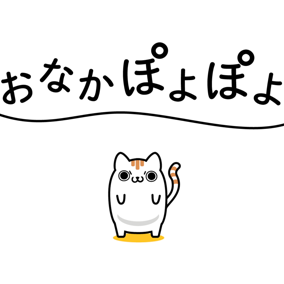
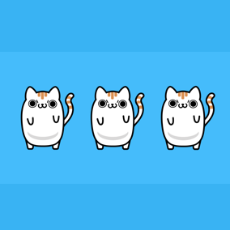

ONAKAPOYOPOYO
Graduation Project/
2018
モーショングラフィックを映像専門スクールBYNDで学んだ時の卒業制作です。
当時おなかがぽよぽよしてきたので、オリジナルキャラクターのぽよねこでぽよぽよに対する焦りを可愛く表現しました。自然なアニメーションになるよう動きに気を使いました。
BYNDはモーショングラフィックの構成、設計、Aftereffectsの基礎操作を教えてくれるスクールです。授業は作成メインなので、実戦経験が積めます。
Graduation Project/BYND

ぽよねこ
オリジナルキャラクター、意思の強い瞳を持つ白いねこ。おなかがぽよぽよしている。
強い意志を持つがダイエットに関しては強い意志は発揮されない。

1
始まった瞬間、おなかぽよぽよのテキストと共に誕生するぽよねこ

2
アイスクリームを食べ体重を気にしないぽよねこ

3
増殖し三匹で息の合ったダンスを披露するぽよねこ